Working with certificate
Production - Certificate line which was automatically generated
User should use the “filters” area to refine their daily task and work in finished work orders (Column TS filter to 90).
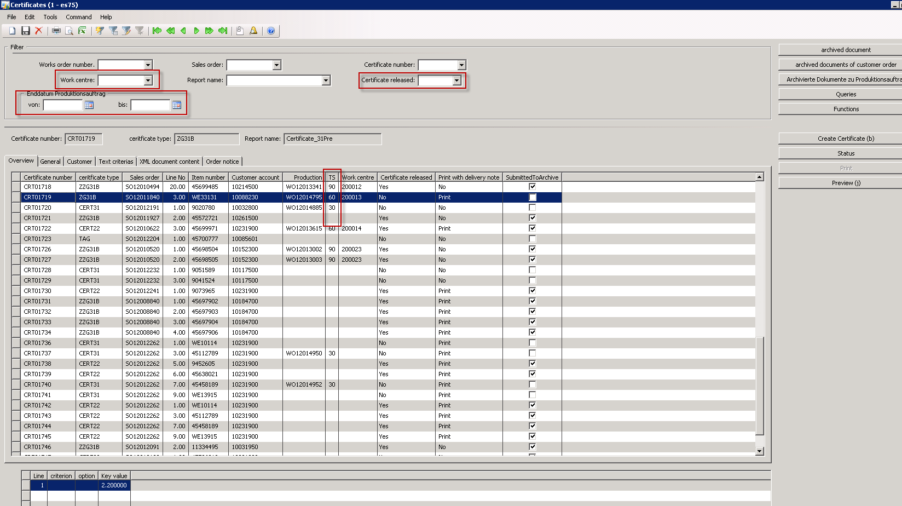
Tab "Order notice" shows requirements from Sales or Work Order
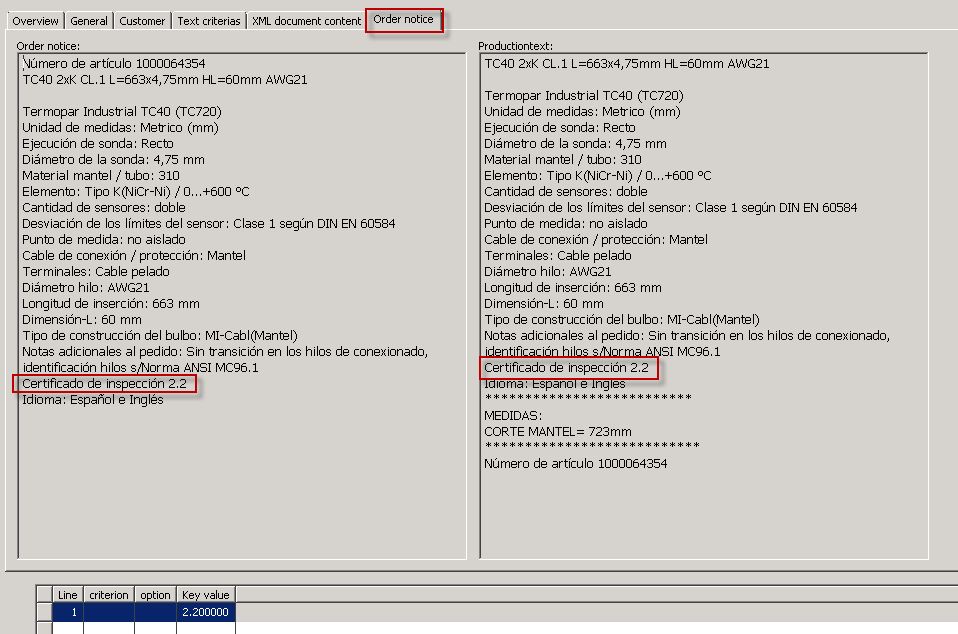
Tab "General" - check of "Report name"
User should verify the field “Report Name” even it was automatically or manually set. If any change is necessary, then the field “Change Reason” should be use to inform the reason.
Flag “with Pre Certificate“ must be set for 3.1 Material (certificate from vendor)
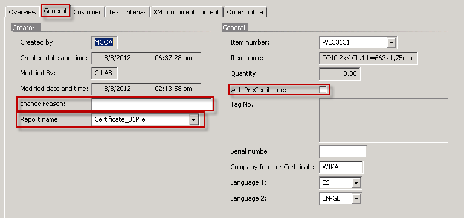
Important
Fields "Report Name" and "Language" are mandatories
Choosing text key values
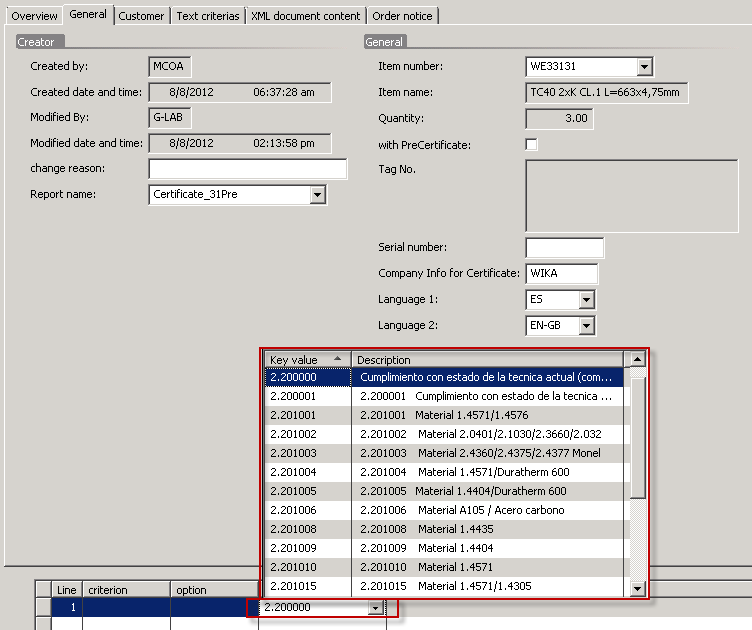
Choose right text blocks defined by order notice and report name.
Important
Evaluate if order notice information, report name and key value belongs together
Creating certificate text
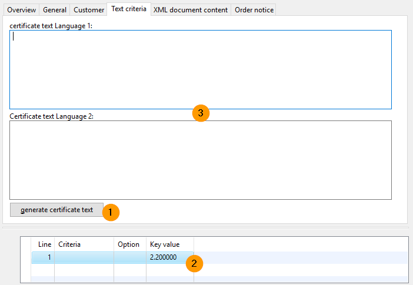
Using button Generate certificate text and used “key value” 2.200000 the certificate text box will be filled. Changes are possible manually change text box or choosing a new key value
Important
If both text boxes are filled and you press button „generate certificate text” current text value are deleted and generate new. Also manual filled in additional text description are deleted
Certificate preview
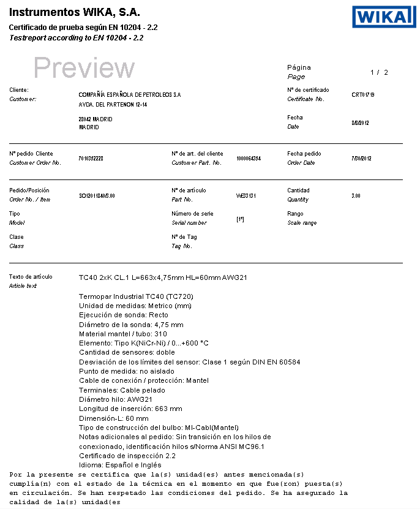
If needed, then change (key value, add manual text, …) and generate the preview again by pressing button “preview“.
Certificate release
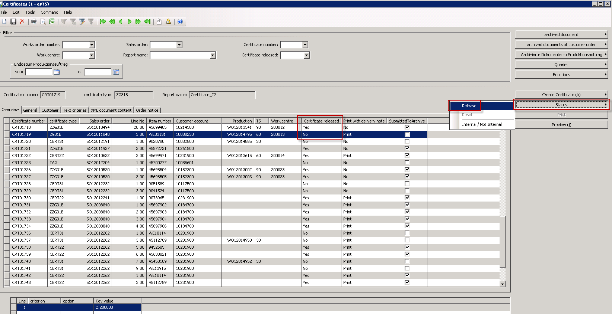
- Pressing the button status -> release change the status of the created certificate line from No to Yes
- Pressing the button status -> reset change the status of the created certificate line from Yes to No
- Pressing the button status -> Internal / Not Internal change the status of the created certificate line from Yes/Internal to No/Internal or vice-versa
Note
For each release D365 archives a new document. If it's the first release then the flag "submitted to archive" is flagged.
Manual creation of a certificate line
From work order
Use button Create Certificate -> from prod order to create a certificate line with link to a work order.
Note
For 3.1 measureing protocol you need for each gauge a line and a serial number
Select Work Order, certificate type and change language
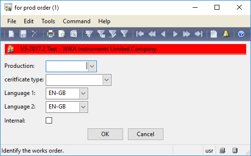
Choose Work Order number by selecting the number or fill it in manually. Choose Certificate type If necessary change the language.
Result: Certificate line is created
Follow process described in topic Tab "General" - check of "Report name"
From Sales Order
Pressing the button creates a certificate line for the whole sales order for certificate type 2.2 (CERT22ORD)
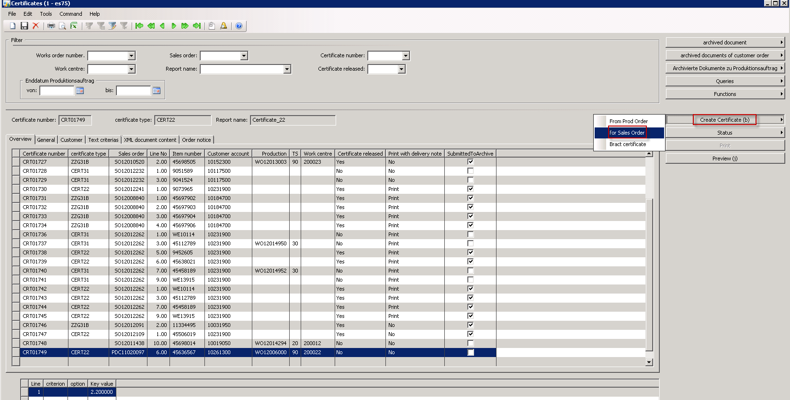
Select sales order number, line number and language
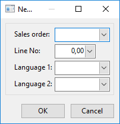
Follow process described in topic Tab "General" - check of "Report name"
Important
If the sales order line was shipped before – certificate have to hand over manual to the customer.
If the automatic BL Picking Batch Job is running, goods can not be shipped without certificates.
Bract certificate
Pressing the button creates a certificate line for a bract certificate (for trading goods)
Select sales order number, line no and change language
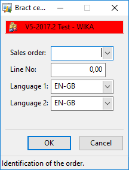
Choose sales order number Fill in line number And if necessary change the language
Result: Certificate line is created
Fill in the used material code and then release
Certificate Structure
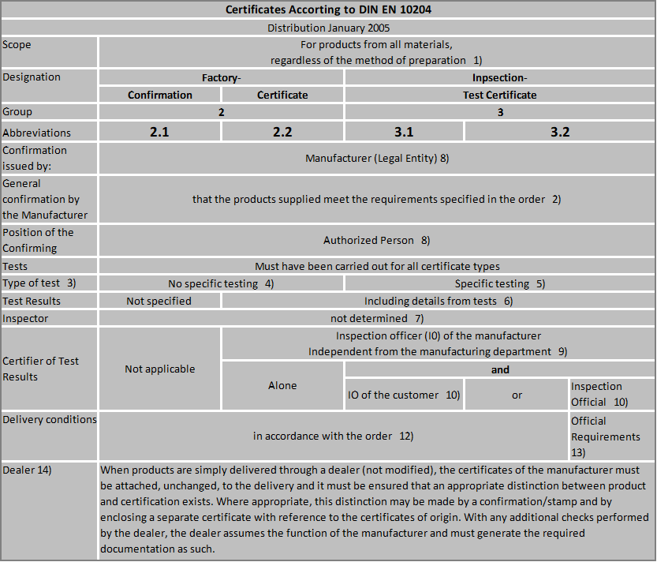
Production -> Certificate -> Setup -> Maintain Certificate Type
| Certificate Type | Description | Report name | SerialNo in Ceritficate | with PreCertificate |
|---|---|---|---|---|
| CERT22 | E_Basis_2.2 | Certificate_22 | Serveral | No |
| CERT22ORD | Certificate per Order | Certificate_22Order | None | No |
| CERT31 | E_Basis_3.1_Miscellaneous | Certificate_31Div | Serveral | Yes |
| EXTERN | External Certificate (Only PDF) | certificate_external | None | No |
| PRODDATA | Production data – No oficial certificate | certificate_ProdData | One | No |
| SF6 | SF6-Certificate | Certificate_31SF6 | One | No |
| ZG31B | E_Basis_3 1_Electronic or E_Basis_3.1_Pressure | Certificate_31Pre | One | No |
| ZG31TEMP | 3.1 Temperature | Certificate_31Temp | One | No |
| ZG32 | Cover sheet for 3.2 Certificate | Certificate_32Mat | Serveral | Yes |
| ZGBRACT | Cover sheet certificate | Certificate_Bract | None | Yes |
| ZZG31B | E_Basis_3.1_Material | Certificate_31Mat | Serveral | No |
| ZZG31BMIT | E_Basis_3.1_Material with vendor certificate | Certificate_31Mat | Serveral | Yes |
Production -> Certificate -> Setup -> Maintain Certificates Type
| Key value | Description |
|---|---|
| 2.200.000 | Grundeinstellung Fertigung nach Stand der Technik |
| 2.200.001 | 2.200001 Fertigung nach Stand der Technik |
| 2.201.001 | 2.201001 Werkstoff 1.4571/1.4576 |
| 2.201.002 | 2.201002 Werkstoff 2.0401/2.1030/2.3660/2.032 |
| 2.201.003 | 2.201003 Werkstoff 2.4360/2.4375/2.4377 Monel |
| 2.201.004 | 2.201004 Werkstoff 1.4571/Duratherm 600 |
| 2.201.005 | 2.201005 Werkstoff 1.4404/Duratherm 600 |
| 2.201.008 | 2.201008 Werkstoff 1.4435 |
| 2.201.009 | 2.201009 Werkstoff 1.4404 |
| 2.201.010 | 2.201010 Werkstoff 1.4571 |
| 2.201.015 | 2.201015 Werkstoff 1.4571/1.4305 |
| 2.201.016 | 2.201016 Werkstoff 1.4571/1.4305/1.4576 |
| 2.201.020 | 2.201020 Werkstoff 2.4819 (HC276) |
| 2.201.021 | 2.201021 Werkstoff nichtmetallisch FPM |
| 2.201.026 | 2.201026 Werkstoff AISI 316 / AISI 316L |
| 2.201.027 | 2.201027 Werkstoff 1.4571/316TI / 1.4404/316L |
| 2.201.030 | 2.201030 Werkstoff 2.4360 (Monel) |
| 2.201.033 | 2.201033 Werkstoff 2.4711 / 316L VIM / VAR |
| 2.201.034 | 2.201034 Werkstoff PFA |
| 2.201.035 | 2.201035 Werkstoff PTFE |
| 2.201.036 | 2.201036 Werkstoff 1.4404 / 1.4305 |
| 2.201.043 | 2.201043 Werkstoff 1.4435/316L |
| 2.201.044 | 2.201044 Werkstoff 1.4404/316L / 1.4435/316L |
| 2.201.045 | 2.201045 Werkstoff 316SS |
| 2.201.046 | 2.201046 Werkstoff 316/1.4571 Gehäuse/Ring |
| 2.201.047 | 2.201047 Werkstoff 1.4404/316L / Tantal |
| 2.201.048 | 2.201048 Werkstoff 1.4404/316L / 2.4819/HC276 |
| 2.201.049 | 2.201049 Werkstoff 1.4404 / 2.4360 (Monel) |
| 2.201.050 | 2.201050 Werkstoff 1.4301 Gehäuse |
| 2.201.060 | 2.201060 Werkstoff Goldbeschichtung 20µm |
| 2.201.061 | 2.201061 WIKA Werkstoff PP/PVDF/EPDM |
| 2.201.104 | 2.201104 Werkstoff 2.4375/2.4360 Monel NACE |
| 2.201.111 | 2.201111 Werkstoff 1.4404/2.4375 NACE |
| 2.201.114 | 2.201114 Werkstoff 2.4375/2.4360/1.4404 NACE |
| 2.201.125 | 2.201125 Werkstoff 1.4404 NACE |
| 2.201.126 | 2.201126 Werkstoff 1.4571 NACE |
| 2.201.127 | 2.201127 Werkstoff 1.4404/1.4571 NACE |
| 2.201.128 | 2.201128 Werkstoff 2.4360 Monel 400 NACE |
| 2.201.129 | 2.201129 Werkstoff 1.4404/2.4819(HC 276) NACE |
| 2.201.130 | 2.201130 Werkstoff 1.4571/2.4819(HC 276) NACE |
| 2.201.131 | 2.201131 Werkstoff 2.4819(HC 276) NACE |
| 2.201.132 | 2.201132 Werkstoff 1.4404/1.4301 NACE |
| 2.201.133 | 2.201133 Werkstoff 1.4571/2.4711 NACE |
| 2.201.134 | 2.201134 Werkstoff 1.4435 NACE |
| 2.201.135 | 2.201135 Werkstoff 1.4435/2.4819(HC 276) NACE |
| 2.201.136 | 2.201136 Werkstoff 1.4404/1.4435 NACE |
| 2.201.137 | 2.201137 Werkstoff 1.4404/2.4360 NACE |
| 2.201.143 | 2.201143 Werkstoff 1.4404/Duratherm NACE |
| 2.201.144 | 2.201144 Werkstoff 1.4571/Duratherm NACE |
| 2.201.145 | 2.201145 Werkstoff 2.4360/1.4435/Duratherm NA |
| 2.201.146 | 2.201146 Werkstoff 1.4404/Tantal NACE |
| 2.201.147 | 2.201147 Werkstoff 1.4404/1.4462(Duplex) NACE |
| 2.201.148 | 2.201148 Werkstoff 316SS NACE |
| 2.201.150 | 2.201150 Werkstoff 1.4404 NACE / MR0103 |
| 2.201.151 | 2.201151 Werkstoff 2.4375/2.4360 NACE/MR0103 |
| 2.201.152 | 2.201152 Werkstoff 1.4571 NACE / MR0103 |
| 2.201.153 | 2.201153 Werkstoff 1.4404/1.4751 NACE/MR0103 |
| 2.201.161 | 2.201161 Werkstoff 1.4404/2.4819 NACE/MR0103 |
| 2.201.162 | 2.201162 Werkstoff 2.4360 NACE / MR0103 |
| 2.201.172 | 2.201172 Werkstoff 1.4404/1.4571 NACE/TRONIC |
| 2.201.173 | 2.201172 Werkstoff 1.4571/2.4711 NACE/TRONIC |
| 2.202.001 | 2.202001 Anzeigegenauigkeit Kl. 0,1 |
| 2.202.002 | 2.202002 Anzeigegenauigkeit Kl. 0,25 |
| 2.202.003 | 2.202003 Anzeigegenauigkeit +- 3,0 % Druck steig. |
| 2.202.005 | 2.202005 Anzeigegenauigkeit Kl. 0,5 |
| 2.202.006 | 2.202006 Anzeigegenauigkeit Kl. 0,6 |
| 2.202.010 | 2.202010 Anzeigegenauigkeit Kl. 1,0 |
| 2.202.016 | 2.202016 Anzeigegenauigkeit Kl. 1,6 |
| 2.202.017 | 2.202017 Anzeigegenauigkeit Kl. 1,6/EN 837-1 |
| 2.202.025 | 2.202025 Anzeigegenauigkeit Kl. 2,5 |
| 2.202.050 | 2.202050 Genauigkeit 0,5 der Spanne |
| 2.202.051 | 2.202051 Genauigkeit 0,25 der Spanne |
| 2.202.052 | 2.202052 Genauigkeit 0,1 der Spanne |
| 2.202.053 | 2.202053 Genauigkeit 1,0 der Spanne |
| 2.202.060 | 2.202060 Genauigkeit/Transmitter |
| 2.202.063 | 2.202063 Klassen/Anzeige Klasse A |
| 2.202.064 | 2.202064 Klassen/Anzeige Klasse B |
| 2.202.065 | 2.202065 Klassen/Anzeige Klasse 1 für TC |
| 2.202.066 | 2.202066 Klassen/Anzeige Klasse 2 für TC |
| 2.202.070 | 2.202070 Anzeigegenauigkeit Kl. xx |
| 2.203.001 | 2.203001 Anzeige- Schalt.- Spannungsprüfung |
| 2.203.004 | 2.203004 Isolationswiderstand, -festigkeit 1M |
| 2.203.006 | 2.203006 Isolationswiderstand, -festigkeit 1s |
| 2.203.007 | 2.203007 Schaltpunkte PS1... |
| 2.203.009 | 2.203009 Schaltpunkte PS1...Toleranz |
| 2.203.011 | 2.203011 Isolationswiderstand, 2,4kVAC 1sec. |
| 2.203.012 | 2.203012 Schaltpunkte PS1...Toleranz % |
| 2.203.020 | 2.203020 Schaltpunkte in Toleranz |
| 2.204.000 | 2.204000 Druckprüfung |
| 2.204.001 | 2.204001 Druckprüfung 1,3 |
| 2.204.013 | 2.204013 Druckprüfung |
| 2.205.000 | 2.205000 Dichtigkeit |
| 2.205.003 | 2.205003 Dichtigkeit 10 -3 mbar l/s |
| 2.205.005 | 2.205005 Dichtigkeit 10 -5 mbar l/s |
| 2.205.007 | 2.205007 Dichtigkeit 10 -7 mbar l/s |
| 2.205.008 | 2.205008 Dichtigkeit 10 -8 mbar l/s |
| 2.205.009 | 2.205009 Dichtigkeit 10 -9 mbar l/s |
| 2.206.003 | 2.206003 Geprüfte Schweißer EN 287 |
| 2.209.006 | 2.209006 Geräte öl- und fettfrei gefertigt |
| 2.209.162 | 2.209162 silikonfrei |
| 2.210.002 | 2.210002 Farbeindringprüfung |
| 2.211.001 | 2.211001 Schutzart IP 65 |
| 2.211.017 | 2.211017 Umgebungstemperatur -XX/+XX°C |
| 2.211.018 | 2.211018 Umgebungstemperatur +XX°C |
| 2.231.001 | 2.231001 Sauerstoff "öl- und fettfrei" |
| 2.231.002 | 2.231002 Sauerstoff |
| 2.250.002 | 2.250002 Schockwerte 10g |
| 2.250.010 | 2.250010 Vibrationsfestigkeit 10g |
| 2.270.202 | 2.270202 WIKA Füllflüssigkeiten Glyzerin 99,5% |
| 2.270.204 | 2.270204 ROHS |
| 2.270.206 | 2.270206 LZ4 Füllflüssigkeit KN 77, Durasyn |
| 2.270.207 | 2.270207 LZ4 FDA-Zulassung Dichtung |
| 2.270.210 | 2.270210 LZ4 Füllflüssigkeit KN7,Glyzerin |
| 2.270.211 | 2.270211 LZ4 Füllflüssigkeit KN 92, med. Weißöl |
| 2.270.218 | 2.270218 LZ4 Füllflüssigkeit KN 59, NEOBEE M-20 |
| 2.275.002 | 2.275002 LZ4 Oberflächenr. Schw/Membr/Dichtfl |
| 2.275.205 | 2.275205 LZ4 Oberflächenrauhigkeit <0,8 + 3A Zul. |
| 2.275.226 | Oberflächenrauhigkeit medienberührt |
| 2.275.227 | Oberflächenrauhigkeit sonstige |
| 3.100.005 | 3.100005 Werkstoffnachweis medienberührte metallische Bauteile |
| 3.100.006 | 3.100006 Werkstoffnachweis medienberührte Bauteile nicht metallisch |
| 3.100.007 | 3.100007 Werkstoffnachweis medienberührte metallische Bauteile nach weiteren Normen |
| 3.100.010 | 3.100010 Positive Materialidentifikation (PMI) |
| 3.101.101 | 3.101101 Werkstoff 1.4571 NACE |
| 3.101.102 | 3.101102 Werkstoff 1.4404/2.4375 NACE |
| 3.101.104 | 3.101104 Werkstoff 2.4375/2.4360 NACE |
| 3.101.106 | 3.101106 Werkstoff 2.4819 NACE |
| 3.101.107 | 3.101107 Werkstoff 1.4404 NACE |
| 3.101.108 | 3.101108 Werkstoff 1.4404/1.4571 NACE |
| 3.102.010 | 3.102010 Anzeigegenauigkeit Kl. 1,0 |
| 3.103.005 | 3.103005 WIKA Spannungsfestigkeit |
| 3.104.001 | 3.104001 Druckprüfung 1,3 / 5 min |
| 3.104.002 | 3.104002 Druckprüfung 1,0 / 15 min |
| 3.104.003 | 3.104003 Druckprüfung 1,5 / 5 min |
| 3.104.004 | 3.104004 Druckprüfung 1,0 / 5 min. |
| 3.104.005 | 3.104005 Druckprüfung 1,0 / 5 min. stat. |
| 3.104.006 | 3.104006 Druckprüfung 1,0 / 15 min. stat. |
| 3.104.010 | 3.104010 Druckprüfung: Dauer, Medium, Druck |
| 3.104.013 | 3.104013 Innendruck 60 bar / 3 min |
| 3.104.014 | 3.104014 Innendruck 150 bar / 3 min |
| 3.104.015 | 3.104015 Innendruck 60 bar / 5 min |
| 3.104.016 | 3.104016 Innendruck 150 bar / 5 min |
| 3.104.018 | 3.104018 Außendruck 30 bar / 3 min |
| 3.104.019 | 3.104019 Außendruck 60 bar / 3 min |
| 3.104.020 | 3.104020 Außendruck 150 bar / 3 min |
| 3.104.030 | 3.104030 TD Innendruck 500 bar / 3 min |
| 3.104.035 | 3.104035 TD Außendruck 85 bar / 3 min |
| 3.104.037 | 3.104037 TD Außendruck 160 bar / 3 min |
| 3.105.003 | 3.105003 Dichtigkeit 10 -3 mbar l/s |
| 3.105.005 | 3.105005 Dichtigkeit 10 -5 mbar l/s |
| 3.105.007 | 3.105007 Dichtigkeit 10 -7 mbar l/s |
| 3.105.008 | 3.105008 Dichtigkeit 10 -8 mbar l/s |
| 3.105.009 | 3.105009 Dichtigkeit 10 -9 mbar l/s |
| 3.105.017 | 3.105017 Dichtigkeit 10 -7 an Membrane |
| 3.106.002 | 3.106002 LZ4 Zusatz für MDI D01, D02, D03 |
| 3.106.003 | 3.106003 Ausführung der medienberührten Schweissnähte durch geprüfte Schweisser, nach EN 287 |
| 3.106.011 | 3.106011 Schweissnaht: massive Spitze zu Rohr |
| 3.106.012 | 3.106012 Schweissnaht: Hülse zum Flansch (FPW) |
| 3.106.013 | 3.106013 Schweissnaht: Rohr und Bodenstück |
| 3.106.014 | 3.106014 Ausführung der medienberührten Schweissnähte durch geprüfte Schweisser, nach ASME Sec. IX |
| 3.106.015 | 3.106015 Ausführung der medienberührten Schweissnähte durch geprüfte Schweisser,nach AD2000,HP2/1 |
| 3.110.002 | 3.110002 Farbeindringprüfung |
| 3.110.015 | 3.110015 Farbeindringprüfung nach DIN EN 571-1 (Schweißnaht + Federträger) |
| 3.110.016 | 3.110016 Farbeindringprüfung nach DIN EN 571-1 (Druckmittler) |
| 3.112.004 | 3.112004 Ultraschallprüfung |
| 3.112.005 | 3.112005 Ultraschallprüfung mit Vorlieferantenzeugnis |
| 3.112.006 | 3.112006 Ultraschallprüfung gemäß DIN EN 583/1 |
| 3.131.001 | 3.131001 Sauerstoff "öl- und fettfrei" |
| 3.131.003 | 3.131003 Geräte öl- und fettfrei gefertigt |
| 3.180.001 | 3.180001 WIKA Siemens Mittelstück (Lötung) |
Index
| Index | Status | Date | Author | Reason for change |
|---|---|---|---|---|
| 01 | Released | TBD | Simon Berberich | Publication |